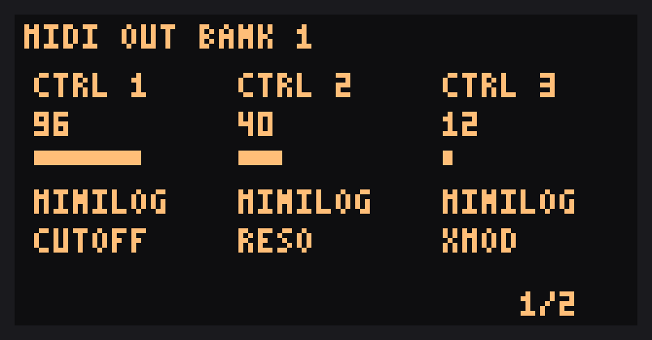
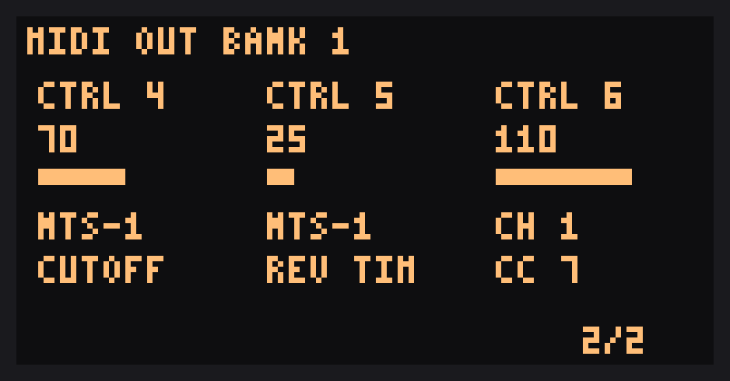
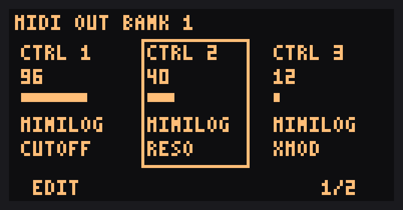
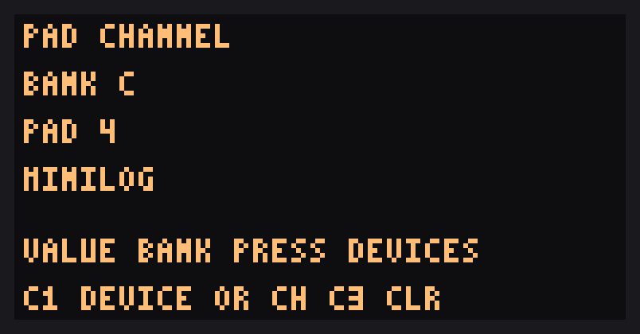
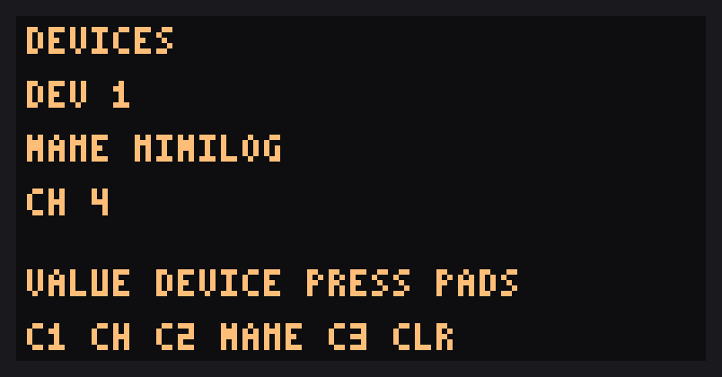
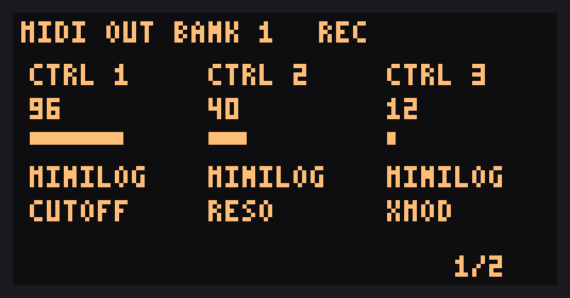

Everything the MIDI Conductor adds to DOOM OS, and the buttons that run it.
Experimental. Flashing modified firmware can brick your SP-404MKII, and this has only been tested on one unit
running Roland 5.52 with DOOM OS 0.6.1-alpha (build ED5E). The patch changes a few of Roland's own routines, which adds risk of its own.
Keep the original Roland files so you can go back. Use at your own risk.
In MIDI mode the CTRL knobs send MIDI instead of changing the effect. There are 36 CTRLs in six banks of six. The MIDI page shows three CTRLs at a time.
SHIFT + FX1..FX6 chooses bank 1 to 6 and turns MIDI mode on. The FX key of the active bank is lit.
Press VALUE to flip between CTRL pages 1/2 and 2/2 (CTRL 1 to 3, then 4 to 6).
EXIT leaves MIDI mode and returns to DOOM OS.
Each CTRL sends a CC on the channel and number you set.

CTRL 1 to 3 (page 1/2)

CTRL 4 to 6 (page 2/2)
Editing a CTRL
SHIFT + MARK turns edit mode on and off on the MIDI page. In edit mode, turn VALUE to pick the CTRL, then use the CTRL knobs to set it:
CTRL 1 chooses its device or MIDI channel. The knob runs through devices 1 to 7, then channels 1 to 16.
CTRL 2 chooses its CC. For a device that has a CC list (below) it picks by name.
If a CTRL follows a device, the page shows Dn CH c. Changing a device's channel updates every pad and CTRL that uses it.
All settings are saved in DOOM OS's settings file and survive a power cycle.

Edit mode, CTRL 2 selected
Pad channels and devices
Every pad sends its notes on its own channel. A pad with no channel sends no note at all.SHIFT + REMAIN opens learn mode from any DOOM screen (MIDI mode can be off).
Pads view
VALUE picks the pad bank A to J. Tap a pad to select it.
CTRL 1 sets its device or channel. CTRL 3 clears it.
Devices view (press VALUE to switch)
VALUE picks device 1 to 7.
CTRL 1 sets the device's channel, CTRL 2 its name (from a fixed list), CTRL 3 clears it.
EXIT or SHIFT + REMAIN leaves learn mode. The pad screen and MIDI page show just the device name.

Pads view

Devices view
CC names
Devices named MINILOG or NTS-1 carry that synth's CC list. A CTRL that follows such a device picks its CC by name, and the page shows the name.
Other devices keep raw CC numbers.
This release has the MINILOG and NTS-1 lists built in. Lists for other synths are planned.
Your own devices
On the unit you can give each of the seven device slots a channel and pick a name from the fixed list, and any CTRL can send any CC number as a raw number, so every synth works. What you can't do yet is create your own named CC list or type your own device name; that is planned for a later release.
Notes
Pitched steps from DOOM's piano roll send the pad's note plus the step's pitch, on the pad's channel.
Notes end at the step's gate instead of the sample's end. STOP and choke then send no note-off, so a note can be left hanging.
Recording knob moves
Record your CTRL moves into a pattern and have them play back as CC. Each CTRL has its own lane of 64 points across the pattern, so slow sweeps stay smooth.
SHIFT + VALUE turns recording on and off while MIDI mode is on. The page shows REC.
While recording, a CTRL you move is written at every point the pattern passes. A CTRL you touch keeps recording its current value until you stop.
The recorded moves play back as the pattern runs, with MIDI mode on or off, and stop when the sequencer stops.
Turn a CTRL by hand during playback and it takes over from its lane until the pattern loops.
SHIFT + EXIT erases every lane and leaves MIDI mode on.

Recording on
All patterns share the same lanes, and they are kept in RAM only, so they are cleared when you power off.
Key summary
Keys
Does
SHIFT + FX1..FX6
MIDI mode on, bank 1 to 6
VALUE
Flip CTRL page 1/2, 2/2
SHIFT + MARK
Edit the CTRLs
SHIFT + REMAIN
Pad channel and device learn mode
SHIFT + VALUE
Recording on or off
SHIFT + EXIT
Erase all recorded moves
EXIT
Leave edit or learn mode, then MIDI mode
Limits
One MIDI output (DIN). USB MIDI isn't covered.
Knob moves in MIDI mode don't change the SP's own effect.
If a synth echoes CC back into the SP, feedback is possible. Untested.
Only Roland 5.52 with DOOM OS 0.6.1-alpha (ED5E) is supported. DOOM OS is built into the patch, and the patcher refuses any file other than stock Roland 5.52, so a newer Roland or DOOM OS release can't be patched until it has been tested here.